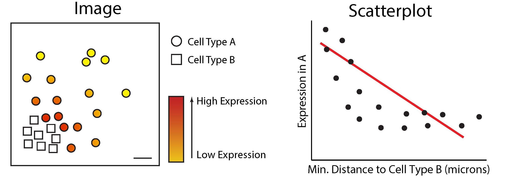
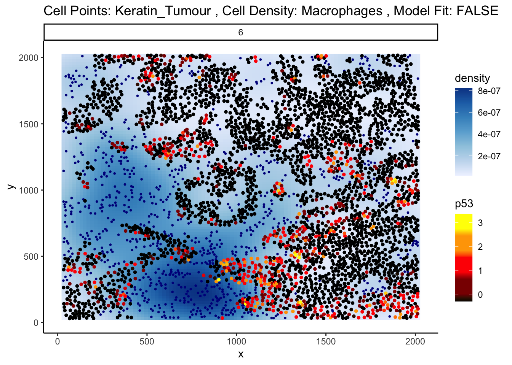
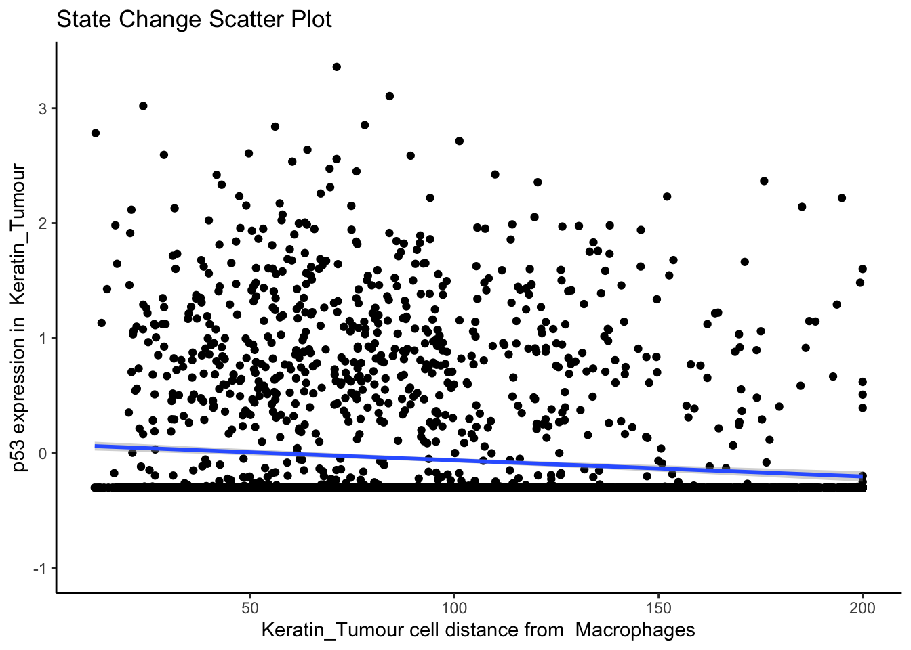

11 Changes in marker expression
All of the different spatial metrics we’ve looked at up until now have looked at relationships between cell types, without taking into account the marker expressions of each cell type. Typical analyses in single-cell RNA sequencing would involve looking into differentially expressed genes for particular cell types between 2 samples, and we can do the same analyses here. At the same time, we can also look at more complicated analyses incorporating both spatial information and marker expression, to see if we can come up with a more informative metric of changes in cells across different conditions.
In this section, we will look into how marker expression changes in distinct cell types across patients, and whether that informs patient survival.
# set parameters
set.seed(51773)
use_mc <- TRUE
if (use_mc) {
nCores <- max(parallel::detectCores()/2, 1)
} else {
nCores <- 1
}
BPPARAM <- simpleSeg:::generateBPParam(nCores)
theme_set(theme_classic())11.1 Statial: Marker means
One of the easiest things to quantify in terms of markers is a marker mean. For a given image, we assess the total marker mean across all cells within an image, and compare them across disease states. We can do this on an image level, a cell type level, a region level, and a cell type within regions level. For example, if your question is: “How does the expression of CD163 in infiltrating macrophages within the tumour spatial domain differ across my 2 treatment groups?”, you’ll want to look at the marker mean of macrophages within specifically the tumour domain.
For this demonstration, we will use our Keren 2018 dataset.
kerenSPE <- SpatialDatasets::spe_Keren_2018()
# Removing patients without survival data.
kerenSPE <- kerenSPE[,!is.na(kerenSPE$`Survival_days_capped*`)]
# identify spatial domains with lisaClust
kerenSPE <- lisaClust(kerenSPE,
k = 5,
BPPARAM = BPPARAM)Time for this code chunk to run with 5.5 cores: 24.32 seconds
kerenSPE$event = 1 - kerenSPE$Censored
kerenSPE$survival = Surv(kerenSPE$`Survival_days_capped*`, kerenSPE$event)
# Extracting survival data
survData <- kerenSPE |>
colData() |>
data.frame() |>
select(imageID, survival) |>
unique()
kerenSPE$survival <- NULL
# Creating survival vector
kerenSurv <- survData$survival
names(kerenSurv) <- survData$imageID
kerenSurv <- kerenSurv[!is.na(kerenSurv)]Our Statial package provides functionality to identify the average marker expression of a given cell type in a given region, using the getMarkerMeans function. Similar to spicyR and lisaClust, these features can also be used for survival analysis.
cellTypeRegionMeans <- getMarkerMeans(kerenSPE,
imageID = "imageID",
cellType = "cellType",
region = "region")
cellTypeRegionMeans[1:3, 1:3] Na__Keratin_Tumour__region_5 Si__Keratin_Tumour__region_5
1 -0.76850506 -0.54544463
10 -0.01850892 0.08525614
11 -0.62116507 -0.41870981
P__Keratin_Tumour__region_5
1 -1.12173616
10 -0.05567915
11 0.25139671The output is a dataframe containing the average expression of each marker in each cell type in each region. The column names are formatted as: marker__cell_type__region.
We can use the colTest function from spicyR to check whether average marker expression in each cell type in each region is associated with survival probability. colTest requires three arguments: i) df specifies the dataframe containing marker means, ii) condition specifies the outcome of interest, and iii) type specifies the type of test to perform (wilcox, t-test, or survival). In the code below, we’ve specified condition to be our Surv vector and type = survival indicates we are performing survival analysis.
survivalResults <- colTest(df = cellTypeRegionMeans[names(kerenSurv), ],
condition = kerenSurv,
type = "survival")
head(survivalResults) coef se.coef pval adjPval
CD209__CD4_T_cell__region_2 12.0 3.20 0.00016 0.39
B7H3__CD4_T_cell__region_2 270.0 76.00 0.00038 0.39
FoxP3__CD4_T_cell__region_2 25.0 7.10 0.00038 0.39
CD163__CD4_T_cell__region_2 67.0 19.00 0.00038 0.39
CD8__Endothelial__region_1 7.6 2.20 0.00060 0.40
Keratin6__Keratin_Tumour__region_1 1.5 0.45 0.00068 0.40
cluster
CD209__CD4_T_cell__region_2 CD209__CD4_T_cell__region_2
B7H3__CD4_T_cell__region_2 B7H3__CD4_T_cell__region_2
FoxP3__CD4_T_cell__region_2 FoxP3__CD4_T_cell__region_2
CD163__CD4_T_cell__region_2 CD163__CD4_T_cell__region_2
CD8__Endothelial__region_1 CD8__Endothelial__region_1
Keratin6__Keratin_Tumour__region_1 Keratin6__Keratin_Tumour__region_1Our most significant relationship appears to be CD209__CD4_T_cell__region_2, which indicates that the expression of marker CD209 in CD4 T cells in region 2 is strongly associated with survival probability. We can examine this relationship in more detail by plotting a Kaplan-Meier curve.
# Selecting the most significant relationship
survRelationship <- cellTypeRegionMeans[["CD209__CD4_T_cell__region_2"]]
survRelationship <- ifelse(survRelationship > median(survRelationship), "Higher expression", "Lower expression")
# Plotting Kaplan-Meier curve
survfit2(kerenSurv ~ survRelationship) |>
ggsurvfit() +
add_pvalue() +
ggtitle("CD209__CD4_T_cell__region_2")
The positive coefficient associated with CD209__CD4_T_cell__region_2 indicates that higher expression is associated with poorer survival outcomes for patients, which is supported by the Kaplan-Meier curve.
We can also look at cell types alone, without separating by region. To do this, we simply do not specify region.
cellTypeMeans <- getMarkerMeans(kerenSPE,
imageID = "imageID",
cellType = "cellType")
survivalResults <- colTest(cellTypeMeans[names(kerenSurv), ], kerenSurv, type = "survival")
head(survivalResults) coef se.coef pval adjPval cluster
CD56__Tregs 15.0 4.20 0.00051 0.41 CD56__Tregs
HLA_Class_1__Mono_or_Neu -1.4 0.47 0.00230 0.51 HLA_Class_1__Mono_or_Neu
FoxP3__Endothelial 120.0 40.00 0.00350 0.51 FoxP3__Endothelial
CD138__Macrophages 1.1 0.39 0.00490 0.51 CD138__Macrophages
HLA_Class_1__CD8_T_cell -1.3 0.48 0.00520 0.51 HLA_Class_1__CD8_T_cell
CD138__dn_T_CD3 0.4 0.15 0.00570 0.51 CD138__dn_T_CD3# Selecting the most significant relationship
survRelationship <- cellTypeMeans[["CD56__Tregs"]]
survRelationship <- ifelse(survRelationship > median(survRelationship), "Higher expression", "Lower expression")
# Plotting Kaplan-Meier curve
survfit2(kerenSurv ~ survRelationship) |>
ggsurvfit() +
add_pvalue() +
ggtitle("CD56__Tregs")
The coefficient associated with CD56__Tregs is positive, which indicates that higher expression is associated with poorer survival outcomes for patients.
11.2 SpatioMark: Identifying continuous changes in cell state
Another approach we can take is to examine contiguous changes in abundance of a gene or protein within a particular cell type. Before, we were comparing changes in abundance across discrete groups or clinical outcomes. By examining contiguous changes in marker expression, we can identify cell-cell interactions that catalyse cell state changes.
The approach outlined below measures how marker expression in a cell changes with spatial proximity and abundance with respect to other cell types. The methods utilised here will thereby provide a framework to explore how the dynamic behaviour of cells are altered by the agents they are surrounded by.

11.2.1 Continuous cell state changes within a single image
The first step in analysing these changes is to calculate the spatial proximity and abundance of each cell to every cell type. getDistances calculates the Euclidean distance from each cell to the nearest cell of each cell type. getAbundances calculates the K-function value for each cell with respect to each cell type. Both metrics are stored in the reducedDims slot of the SpatialExperiment object.
# assign spatial coordinates
kerenSPE$x = spatialCoords(kerenSPE)[, 1]
kerenSPE$y = spatialCoords(kerenSPE)[, 2]
# calculate distances for a maximum distance of 200
kerenSPE <- getDistances(kerenSPE,
maxDist = 200)
# calculate K-function for a radius of 200
kerenSPE <- getAbundances(kerenSPE,
r = 200,
nCores = nCores)
reducedDims(kerenSPE)List of length 2
names(2): distances abundancesFirst, let’s examine the same effect observed earlier with Kontextual - the localisation between p53-positive keratin/tumour cells and macrophages in the context of total keratin/tumour cells for image 6 of the Keren 2018 dataset.
Statial provides two main functions to assess this relationship - calcStateChanges and plotStateChanges. We can use calcStateChanges to examine the relationship between two cell types for one marker in a specific image. In this case, we’re examining the relationship between keratin/tumour cells (from = Keratin_Tumour) and macrophages (to = "Macrophages") for the marker p53 (marker = "p53") in image = "6". We can appreciate that the fdr statistic for this relationship is significant, with a negative t-value, indicating that the expression of p53 in keratin/tumour cells decreases as distance from macrophages increases.
stateChanges <- calcStateChanges(
cells = kerenSPE,
type = "distances",
image = "6",
from = "Keratin_Tumour",
to = "Macrophages",
marker = "p53",
nCores = nCores)
stateChanges imageID primaryCellType otherCellType marker coef tval
1 6 Keratin_Tumour Macrophages p53 -0.001402178 -7.010113
pval fdr
1 2.868257e-12 2.868257e-12Statial also provides a convenient function for visualising this interaction - plotStateChanges. Here, again we can specify image = 6 and our main cell types of interest, keratin/tumour cells and macrophages, and our marker p53, in the same format as calcStateChanges.
Through this analysis, we can observe that keratin/tumour cells closer to a group of macrophages tend to have higher expression of p53, as observed in the first graph. This relationship is quantified with the second graph, showing an overall decrease of p53 expression in keratin/tumour cells as distance from macrophages increases.
These results allow us to essentially arrive at the same result as Kontextual, which calculated a localisation between p53+ keratin/tumour cells and macrophages in the wider context of keratin/tumour cells.
p <- plotStateChanges(
cells = kerenSPE,
type = "distances",
image = "6",
from = "Keratin_Tumour",
to = "Macrophages",
marker = "p53",
size = 1,
shape = 19,
interactive = FALSE,
plotModelFit = FALSE,
method = "lm")
# plot the image
p$image
# plot the scatter plot
p$scatter
11.2.2 Continuous cell state changes across all images
Beyond looking at single cell-to-cell interactions for a single image, we can also look at all interactions across all images. The calcStateChanges function provided by Statial can be expanded for this exact purpose - by not specifying cell types, a marker, or an image, calcStateChanges will examine the most significant correlations between distance and marker expression across the entire dataset. Here, we’ve filtered out the most significant interactions to only include those found within image 6 of the Keren et al. dataset.
stateChanges <- calcStateChanges(
cells = kerenSPE,
type = "distances",
nCores = nCores,
minCells = 100
)
stateChanges |>
filter(imageID == 6) |>
head(n = 10) imageID primaryCellType otherCellType marker coef tval
1 6 Keratin_Tumour Unidentified Na 0.004218419 25.03039
2 6 Keratin_Tumour Macrophages HLA_Class_1 -0.003823497 -24.69629
3 6 Keratin_Tumour CD4_T_cell HLA_Class_1 -0.003582774 -23.87797
4 6 Keratin_Tumour Unidentified Beta.catenin 0.005893120 23.41953
5 6 Keratin_Tumour CD8_T_cell HLA_Class_1 -0.003154544 -23.13804
6 6 Keratin_Tumour DC_or_Mono HLA_Class_1 -0.003353834 -22.98944
7 6 Keratin_Tumour dn_T_CD3 HLA_Class_1 -0.003123446 -22.63197
8 6 Keratin_Tumour Tumour HLA_Class_1 0.003684079 21.94265
9 6 Keratin_Tumour CD4_T_cell Fe -0.003457338 -21.43550
10 6 Keratin_Tumour CD4_T_cell phospho.S6 -0.002892457 -20.50767
pval fdr
1 6.971648e-127 3.361087e-123
2 7.814253e-124 3.408521e-120
3 1.745242e-116 5.328836e-113
4 1.917245e-112 5.488145e-109
5 5.444541e-110 1.424922e-106
6 1.053130e-108 2.679645e-105
7 1.237988e-105 2.870893e-102
8 8.188258e-100 1.630540e-96
9 1.287478e-95 2.246354e-92
10 3.928912e-88 5.712544e-85Time for this code chunk to run with 5.5 cores: 22.13 seconds
In image 6, the majority of the top 10 most significant interactions occur between keratin/tumour cells and an immune population, and many of these interactions appear to involve the HLA class I ligand.
We can examine some of these interactions further with the plotStateChanges function.
p <- plotStateChanges(
cells = kerenSPE,
type = "distances",
image = "6",
from = "Keratin_Tumour",
to = "Macrophages",
marker = "HLA_Class_1",
size = 1,
shape = 19,
interactive = FALSE,
plotModelFit = FALSE,
method = "lm"
)
# plot the image
p$image
# plot the scatter plot
p$scatter`geom_smooth()` using formula = 'y ~ x'Warning: Removed 1359 rows containing non-finite outside the scale range
(`stat_smooth()`).Warning: Removed 1359 rows containing missing values or values outside the scale range
(`geom_point()`).
The plot above shows us a clear visual correlation - as the distance from macrophages decreases, keratin/tumour cells increase their expression HLA class I. Biologically, HLA Class I molecules are ligands present on all nucleated cells, responsible for presenting internal cell antigens to the immune system. Their role is to mark abnormal cells for destruction by CD8+ T cells or NK cells, facilitating immune surveillance and response.
Next, let’s take a look at the top 10 most significant results across all images.
stateChanges |> head(n = 10) imageID primaryCellType otherCellType marker coef
69468 37 Endothelial Tumour Lag3 -0.001621517
150351 11 Neutrophils NK CD56 -0.059936866
16402 35 CD4_T_cell B_cell CD20 -0.029185750
16498 35 CD4_T_cell DC_or_Mono CD20 0.019125946
4891 35 B_cell DC_or_Mono phospho.S6 0.005282065
16507 35 CD4_T_cell DC_or_Mono phospho.S6 0.004033218
4885 35 B_cell DC_or_Mono HLA.DR 0.011120703
5043 35 B_cell Other_Immune P 0.011182182
16354 35 CD4_T_cell dn_T_CD3 CD20 0.016349492
4888 35 B_cell DC_or_Mono H3K9ac 0.005096632
tval pval fdr
69468 -1.082138e+14 0.000000e+00 0.000000e+00
150351 -1.419485e+14 0.000000e+00 0.000000e+00
16402 -4.057355e+01 7.019343e-282 4.286502e-277
16498 4.053436e+01 1.891267e-281 8.662052e-277
4891 4.041385e+01 5.306590e-278 1.944345e-273
16507 3.472882e+01 4.519947e-219 1.380098e-214
4885 3.415344e+01 8.401034e-212 2.198683e-207
5043 3.414375e+01 1.056403e-211 2.419176e-207
16354 3.391901e+01 1.219488e-210 2.482349e-206
4888 3.399856e+01 3.266533e-210 5.984320e-206Immediately, we can appreciate that a couple of these interactions are not biologically plausible. One of the most significant interactions occurs between B cells and CD4 T cells in image 35, where CD4 T cells are found to increase CD20 expression when in close proximity to B cells. Biologically, CD20 is a highly specific marker for B cells, and under healthy circumstances are usually not expressed in T cells.
Could this potentially be an artefact of calcStateChanges? We can examine the image through the plotStateChanges function, where we indeed observe a strong increase in CD20 expression in T cells nearby B cell populations.
p <- plotStateChanges(
cells = kerenSPE,
type = "distances",
image = "35",
from = "CD4_T_cell",
to = "B_cell",
marker = "CD20",
size = 1,
shape = 19,
interactive = FALSE,
plotModelFit = FALSE,
method = "lm")
# plot the image
p$image
# plot the scatter plot
p$scatter`geom_smooth()` using formula = 'y ~ x'Warning: Removed 26 rows containing missing values or values outside the scale range
(`geom_smooth()`).
So why are T cells expressing CD20? This brings us to a key problem of cell segmentation - contamination.
11.2.3 Contamination (Lateral marker spill over)
Contamination, or lateral marker spill over, is an issue that results in a cell’s marker expressions being wrongly attributed to another adjacent cell. This issue arises from incorrect segmentation where components of one cell are wrongly determined as belonging to another cell. Alternatively, this issue can arise when antibodies used to tag and measure marker expressions don’t latch on properly to a cell of interest, thereby resulting in residual markers being wrongly assigned as belonging to a cell near the intended target cell. It is important that we either correct or account for this incorrect attribution of markers in our modelling process. This is critical in understanding whether significant cell-cell interactions detected are an artefact of technical measurement errors driven by spill over or are real biological changes that represent a shift in a cell’s state.
To circumvent this problem, Statial provides a function that predicts the probability that a cell is any particular cell type - calcContamination. calcContamination returns a dataframe of probabilities demarcating the chance of a cell being any particular cell type. This dataframe is stored under contaminations in the reducedDim slot of the SingleCellExperiment object. It also provides the rfMainCellProb column, which provides the probability that a cell is indeed the cell type it has been designated. For example, for a cell designated as CD8, rfMainCellProb could give a 80% chance that the cell is indeed CD8, due to contamination.
We can then introduce these probabilities as covariates into our linear model by setting contamination = TRUE as a parameter in our calcStateChanges function.
kerenSPE <- calcContamination(kerenSPE)
stateChangesCorrected <- calcStateChanges(
cells = kerenSPE,
type = "distances",
nCores = 1,
minCells = 100,
contamination = TRUE
)
stateChangesCorrected |> head(n = 10) imageID primaryCellType otherCellType marker coef
69468 37 Endothelial Tumour Lag3 -0.001621517
150351 11 Neutrophils NK CD56 -0.059936866
16402 35 CD4_T_cell B_cell CD20 -0.024761183
16498 35 CD4_T_cell DC_or_Mono CD20 0.015967654
16507 35 CD4_T_cell DC_or_Mono phospho.S6 0.003559626
16354 35 CD4_T_cell dn_T_CD3 CD20 0.013556323
88516 3 Keratin_Tumour DC Ca -0.013837429
3697 28 B_cell NK Na -0.004478243
4891 35 B_cell DC_or_Mono phospho.S6 0.004175050
16357 35 CD4_T_cell dn_T_CD3 HLA.DR 0.010239992
tval pval fdr
69468 -5.105340e+13 0.000000e+00 0.000000e+00
150351 -1.421653e+14 0.000000e+00 0.000000e+00
16402 -3.462418e+01 9.037153e-218 5.518718e-213
16498 3.368498e+01 4.984871e-208 2.283084e-203
16507 2.937078e+01 8.017875e-165 2.937765e-160
16354 2.917098e+01 6.842185e-163 2.089158e-158
88516 -2.957229e+01 1.895400e-162 4.960560e-158
3697 -2.932623e+01 2.906760e-160 6.656517e-156
4891 2.896985e+01 3.337690e-160 6.794091e-156
16357 2.862558e+01 1.179250e-157 2.160397e-153However, this is not a perfect solution for the issue of contamination. As we can see, despite factoring in contamination into our linear model, the correlation between B cell density and CD20 expression in CD4 T cells remains one of the most significant interactions in our model.
However, this does not mean factoring in contamination into our linear model was ineffective.
Whilst our correction attempts do not rectify every relationship which arises due to contamination, we show that a significant portion of these relationships are rectified. We can show this by plotting a ROC curve of true positives against false positives. In general, cell type specific markers such as CD4 (specific to T helper cells), CD8 (specific to cytotoxic T cells), and CD20 should not change in cells they are not specific to. Therefore, relationships detected to be significant involving these cell type markers are likely false positives and will be treated as such for the purposes of evaluation. Meanwhile, cell state markers are predominantly likely to be true positives.
Plotting the relationship between false positives and true positives, we’d expect the contamination correction to be greatest in the relationships with the top 100 lowest p values, where we indeed see more true positives than false positives with contamination correction.
cellTypeMarkers <- c("CD3", "CD4", "CD8", "CD56", "CD11c", "CD68", "CD45", "CD20")
values <- c("blue", "red")
names(values) <- c("None", "Corrected")
df <- rbind(
data.frame(TP = cumsum(stateChanges$marker %in% cellTypeMarkers),
FP = cumsum(!stateChanges$marker %in% cellTypeMarkers), type = "None"),
data.frame(TP = cumsum(stateChangesCorrected$marker %in% cellTypeMarkers),
FP = cumsum(!stateChangesCorrected$marker %in% cellTypeMarkers), type = "Corrected"))
ggplot(df, aes(x = TP, y = FP, colour = type)) +
geom_line() +
labs(y = "Cell state marker (FP)", x = "Cell type marker (TP)") +
scale_colour_manual(values = values)
Below, we zoom in on the ROC curve where the top 100 lowest p values occur, where we indeed see more true positives than false positives with contamination correction.

11.2.4 Associate continuous state changes with survival outcomes
Similiar to Kontextual, we can run a similar survival analysis using our state change results. Here, prepMatrix extracts the coefficients, or the coef column of stateChanges by default. To use the t-values instead, specify column = "tval" in the prepMatrix function. As before, we use colTest to build the CoxPH model.
# Preparing features for Statial
stateMat <- prepMatrix(stateChanges)
# Ensuring rownames of stateMat match up with rownames of the survival vector
stateMat <- stateMat[names(kerenSurv), ]
# Remove some very small values
stateMat <- stateMat[, colMeans(abs(stateMat) > 0.0001) > .8]
survivalResults <- colTest(stateMat, kerenSurv, type = "survival")
head(survivalResults) coef se.coef pval adjPval
Keratin_Tumour__Mono_or_Neu__Pan.Keratin -280 89 0.0018 0.63
Macrophages__Keratin_Tumour__HLA_Class_1 220 75 0.0034 0.63
Keratin_Tumour__CD8_T_cell__Keratin6 -220 77 0.0036 0.63
Macrophages__Other_Immune__HLA_Class_1 -480 170 0.0057 0.75
Keratin_Tumour__Mesenchymal__dsDNA -810 310 0.0094 0.80
Keratin_Tumour__Unidentified__H3K27me3 490 190 0.0100 0.80
cluster
Keratin_Tumour__Mono_or_Neu__Pan.Keratin Keratin_Tumour__Mono_or_Neu__Pan.Keratin
Macrophages__Keratin_Tumour__HLA_Class_1 Macrophages__Keratin_Tumour__HLA_Class_1
Keratin_Tumour__CD8_T_cell__Keratin6 Keratin_Tumour__CD8_T_cell__Keratin6
Macrophages__Other_Immune__HLA_Class_1 Macrophages__Other_Immune__HLA_Class_1
Keratin_Tumour__Mesenchymal__dsDNA Keratin_Tumour__Mesenchymal__dsDNA
Keratin_Tumour__Unidentified__H3K27me3 Keratin_Tumour__Unidentified__H3K27me3Time for this code chunk to run with 5.5 cores: 0.18 seconds
Keratin_Tumour__Mono_or_Neu__Pan.Keratin is the most significant pairwise relationship which contributes to patient survival. That is, the relationship between pan-keratin expression in keratin/tumour cells and their spatial proximity to monocytes/neutrophils. The negative coefficient associated with this relationship tells us that higher pan-keratin expression in keratin/tumour cells nearby monocyte/neutrophil cell populations leads to better survival outcomes for patients.
# Selecting the most significant relationship
survRelationship <- stateMat[["Keratin_Tumour__Mono_or_Neu__Pan.Keratin"]]
survRelationship <- ifelse(survRelationship > median(survRelationship), "Higher expression in close cells", "Lower expression in close cells")
# Plotting Kaplan-Meier curve
survfit2(kerenSurv ~ survRelationship) |>
ggsurvfit() +
add_pvalue() +
ggtitle("Keratin_Tumour__Mono_or_Neu__Pan.Keratin")
We conclude the section on spatial quantification metrics here. So far, we have identified 7 metrics to quantify spatial relationships -
- Cell type proportions (FuseSOM)
- Co-localisation between pairs of cell types using the L-function (spicyR)
- Cell type co-localisation with respect to a parent population using
Kontextual(Statial) - Regions of co-localisation, or spatial domains (lisaClust)
- Marker means in each cell type (Statial)
- Marker means in each cell type in each region (Statial)
- Proximity-associated changes in marker expression using SpatioMark (Statial)
In the next section, we will look into how each of these metrics can be used to predict clinical outcomes for patients.
11.3 sessionInfo
R version 4.4.1 (2024-06-14)
Platform: aarch64-apple-darwin20
Running under: macOS Sonoma 14.4.1
Matrix products: default
BLAS: /Library/Frameworks/R.framework/Versions/4.4-arm64/Resources/lib/libRblas.0.dylib
LAPACK: /Library/Frameworks/R.framework/Versions/4.4-arm64/Resources/lib/libRlapack.dylib; LAPACK version 3.12.0
locale:
[1] en_US.UTF-8/en_US.UTF-8/en_US.UTF-8/C/en_US.UTF-8/en_US.UTF-8
time zone: Australia/Sydney
tzcode source: internal
attached base packages:
[1] stats4 stats graphics grDevices utils datasets methods
[8] base
other attached packages:
[1] SpatialDatasets_1.4.0 SpatialExperiment_1.16.0
[3] ExperimentHub_2.14.0 AnnotationHub_3.14.0
[5] BiocFileCache_2.14.0 dbplyr_2.5.0
[7] treekoR_1.14.0 tibble_3.2.1
[9] ggsurvfit_1.1.0 ggplot2_3.5.1
[11] SingleCellExperiment_1.28.1 dplyr_1.1.4
[13] lisaClust_1.14.4 ClassifyR_3.10.5
[15] survival_3.7-0 BiocParallel_1.40.0
[17] MultiAssayExperiment_1.32.0 SummarizedExperiment_1.36.0
[19] Biobase_2.66.0 GenomicRanges_1.58.0
[21] GenomeInfoDb_1.42.0 IRanges_2.40.0
[23] MatrixGenerics_1.18.0 matrixStats_1.4.1
[25] S4Vectors_0.44.0 BiocGenerics_0.52.0
[27] generics_0.1.3 spicyR_1.18.0
[29] Statial_1.8.0
loaded via a namespace (and not attached):
[1] fs_1.6.5 spatstat.sparse_3.1-0
[3] bitops_1.0-9 EBImage_4.48.0
[5] httr_1.4.7 hopach_2.66.0
[7] RColorBrewer_1.1-3 doParallel_1.0.17
[9] numDeriv_2016.8-1.1 tools_4.4.1
[11] doRNG_1.8.6.1 backports_1.5.0
[13] utf8_1.2.4 R6_2.5.1
[15] HDF5Array_1.34.0 lazyeval_0.2.2
[17] mgcv_1.9-1 rhdf5filters_1.18.0
[19] GetoptLong_1.0.5 sp_2.1-4
[21] withr_3.0.2 gridExtra_2.3
[23] coxme_2.2-22 cli_3.6.3
[25] spatstat.explore_3.3-3 sandwich_3.1-1
[27] labeling_0.4.3 nnls_1.6
[29] mvtnorm_1.3-2 spatstat.data_3.1-4
[31] systemfonts_1.1.0 yulab.utils_0.1.8
[33] ggupset_0.4.0 svglite_2.1.3
[35] colorRamps_2.3.4 limma_3.62.1
[37] RSQLite_2.3.8 flowCore_2.18.0
[39] rstudioapi_0.17.1 simpleSeg_1.8.0
[41] gridGraphics_0.5-1 shape_1.4.6.1
[43] spatstat.random_3.3-2 car_3.1-3
[45] scam_1.2-17 Matrix_1.7-1
[47] RProtoBufLib_2.18.0 ggbeeswarm_0.7.2
[49] fansi_1.0.6 abind_1.4-8
[51] terra_1.7-78 lifecycle_1.0.4
[53] yaml_2.3.10 multcomp_1.4-26
[55] edgeR_4.4.0 carData_3.0-5
[57] rhdf5_2.50.0 SparseArray_1.6.0
[59] Rtsne_0.17 blob_1.2.4
[61] grid_4.4.1 promises_1.3.2
[63] shinydashboard_0.7.2 crayon_1.5.3
[65] bdsmatrix_1.3-7 lattice_0.22-6
[67] KEGGREST_1.46.0 magick_2.8.5
[69] cytomapper_1.18.0 pillar_1.9.0
[71] knitr_1.49 ComplexHeatmap_2.22.0
[73] dcanr_1.22.0 rjson_0.2.23
[75] boot_1.3-31 codetools_0.2-20
[77] glue_1.8.0 ggiraph_0.8.11
[79] ggfun_0.1.7 spatstat.univar_3.1-1
[81] data.table_1.16.2 vctrs_0.6.5
[83] png_0.1-8 treeio_1.30.0
[85] gtable_0.3.6 cachem_1.1.0
[87] xfun_0.49 mime_0.12
[89] S4Arrays_1.6.0 ConsensusClusterPlus_1.70.0
[91] pheatmap_1.0.12 iterators_1.0.14
[93] cytolib_2.18.0 statmod_1.5.0
[95] TH.data_1.1-2 nlme_3.1-166
[97] ggtree_3.14.0 bit64_4.5.2
[99] filelock_1.0.3 svgPanZoom_0.3.4
[101] vipor_0.4.7 DBI_1.2.3
[103] colorspace_2.1-1 raster_3.6-30
[105] tidyselect_1.2.1 curl_6.0.1
[107] bit_4.5.0 compiler_4.4.1
[109] diffcyt_1.26.0 DelayedArray_0.32.0
[111] plotly_4.10.4 scales_1.3.0
[113] rappdirs_0.3.3 tiff_0.1-12
[115] stringr_1.5.1 digest_0.6.37
[117] goftest_1.2-3 fftwtools_0.9-11
[119] spatstat.utils_3.1-1 minqa_1.2.8
[121] rmarkdown_2.29 XVector_0.46.0
[123] htmltools_0.5.8.1 pkgconfig_2.0.3
[125] jpeg_0.1-10 lme4_1.1-35.5
[127] fastmap_1.2.0 rlang_1.1.4
[129] GlobalOptions_0.1.2 htmlwidgets_1.6.4
[131] ggthemes_5.1.0 UCSC.utils_1.2.0
[133] shiny_1.9.1 ggh4x_0.2.8
[135] farver_2.1.2 zoo_1.8-12
[137] jsonlite_1.8.9 RCurl_1.98-1.16
[139] magrittr_2.0.3 Formula_1.2-5
[141] GenomeInfoDbData_1.2.13 ggplotify_0.1.2
[143] patchwork_1.3.0 Rhdf5lib_1.28.0
[145] munsell_0.5.1 Rcpp_1.0.13-1
[147] viridis_0.6.5 ape_5.8
[149] ggnewscale_0.5.0 stringi_1.8.4
[151] zlibbioc_1.52.0 MASS_7.3-61
[153] plyr_1.8.9 parallel_4.4.1
[155] deldir_2.0-4 Biostrings_2.74.0
[157] splines_4.4.1 tensor_1.5
[159] circlize_0.4.16 locfit_1.5-9.10
[161] igraph_2.1.1 ggpubr_0.6.0
[163] uuid_1.2-1 ranger_0.17.0
[165] spatstat.geom_3.3-4 ggsignif_0.6.4
[167] rngtools_1.5.2 reshape2_1.4.4
[169] BiocVersion_3.20.0 XML_3.99-0.17
[171] evaluate_1.0.1 BiocManager_1.30.25
[173] nloptr_2.1.1 foreach_1.5.2
[175] tweenr_2.0.3 httpuv_1.6.15
[177] tidyr_1.3.1 purrr_1.0.2
[179] polyclip_1.10-7 clue_0.3-66
[181] ggforce_0.4.2 xtable_1.8-4
[183] broom_1.0.7 tidytree_0.4.6
[185] rstatix_0.7.2 later_1.4.1
[187] viridisLite_0.4.2 class_7.3-22
[189] lmerTest_3.1-3 aplot_0.2.3
[191] AnnotationDbi_1.68.0 memoise_2.0.1
[193] beeswarm_0.4.0 FlowSOM_2.14.0
[195] cluster_2.1.6 concaveman_1.1.0